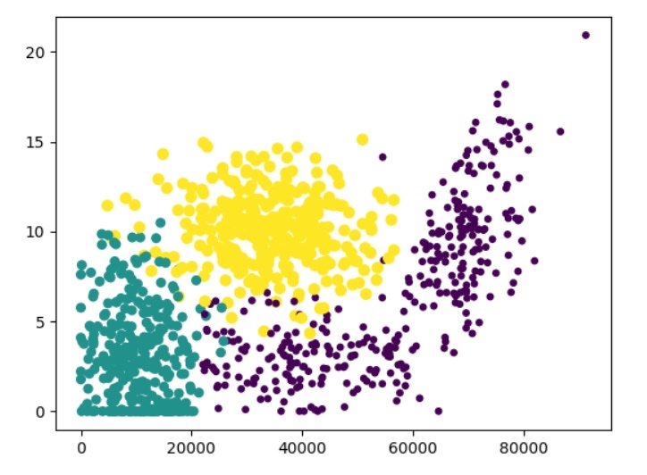

采用测量不同特征值之间的距离进行分类
0x01 KNN
采用测量不同特征值之间的距离进行分类
优点：
- 精度高
- 对异常值不敏感
- 无数据输入假定
缺点：
- 计算复杂度高
- 空间复杂度高
适用数据范围：
- 数值型
- 标称型
0x02 算法实现
算法描述
1.计算测试数据与各个训练数据之间的距离
2.按照距离的递增关系进行排序
3.选取距离最小的K个点
4.确定前K个点所在类别的出现频率
5.返回前K个点中出现频率最高的类别作为测试数据的预测分类
def classify0(inX, dataSet, labels, k):
'''
:param inX: 输入向量
:param dataSet: 训练数据集
:param labels: 标签
:param k: k
:return:
'''
#距离计算
dataSetSize = dataSet.shape[0] #读取矩阵第一维度的长度
diffMat = tile(inX, (dataSetSize, 1)) - dataSet #tile把inX复制dataSetSize维度
sqDiffMat = diffMat**2
sqDistances = sqDiffMat.sum(axis=1)
distances = sqDistances**0.5
#选择距离最小的k个点
sortedDistIndicies = distances.argsort()
print(sortedDistIndicies)
classCount={}
for i in range(k):
voteIlabel = labels[sortedDistIndicies[i]]
classCount[voteIlabel] = classCount.get(voteIlabel, 0) + 1
#排序
sortedClassCount = sorted(classCount.items(), key=operator.itemgetter(1), reverse=True)
return sortedClassCount[0][0]
0x03 实例1
- 收集数据
- 准备数据
def file2matrix(filename):
with open(filename, "r") as fr:
frreadlines = fr.readlines()
numberOfLines = len(frreadlines)
returnMat = zeros((numberOfLines, 3))
classLabelVector = []
index = 0
for line in frreadlines:
line = line.strip()
listFromLine = line.split('\t')
returnMat[index, :] = listFromLine[0:3]
labels = {'didntLike': 1, 'smallDoses': 2, 'largeDoses': 3}
classLabelVector.append(labels[listFromLine[-1]])
index += 1
return returnMat, classLabelVector
- 分析数据
def DataMat(data, labels):
fig = plt.figure()
ax = fig.add_subplot(111)
ax.scatter(data[:, 0], data[:, 1], 15.0*array(labels), 15.0*array(labels))
plt.show()

- 处理数据
归一化数值，转化到0~1之间
newV = (oldV-min)/(max-min)
def autoNorm(dataSet):
minVals = dataSet.min(0)
maxVals = dataSet.max(0)
ranges = maxVals - minVals
m = dataSet.shape[0]
normDataSet = dataSet - tile(minVals, (m, 1))
normDataSet = normDataSet/tile(ranges, (m, 1))
return normDataSet, ranges, minVals
- 测试算法
对hoRatio和k进行参数调整，寻找最佳值
def testData(data_mat, data_label):
hoRatio = 0.80 #内变量
normDataSet, ranges, minVals = autoNorm(data_mat)
m = normDataSet.shape[0]
numTestVecs = int(m * hoRatio)
trueCount = 0.0
for i in range(numTestVecs):
classifierResult = classify0(normDataSet[i, :], normDataSet[numTestVecs:m, :], data_label[numTestVecs:m], 5)
if (classifierResult == data_label[i]):
trueCount += 1.0
print("the total true rate is: %f" % (trueCount/float(numTestVecs)*100) + "%")
print(trueCount)
- 使用算法
def usemode(a, b, c):
file_path = "datingTestSet.txt"
data_mat, data_label = file2matrix(file_path)
normDataSet, ranges, minVals = autoNorm(data_mat)
inarr = array([a, b, c])
classifierResult = classify0((inarr-minVals)/ranges, normDataSet, data_label, 5)
return classifierResult
result = usemode(40920, 8.326976, 0.953952)
(inarr-minVals)/ranges是传入参数归一化后的结果，代入classify0模型，求出与历史数据中的临近值，即结果
0x04 实例2
手写数字识别
def img2vector(filename):
returnVect = zeros((1,1024))
fr = open(filename)
for i in range(32):
lineStr = fr.readline()
for j in range(32):
returnVect[0, 32*i+j] = int(lineStr[j])
return returnVect
def handwritingClassTest():
hwLabels = []
trainingFileList = listdir('digits/trainingDigits')
m = len(trainingFileList)
trainingMat = zeros((m, 1024))
for i in range(m):
#从文件名上解析当前文件中的正确值，存入label
fileNameStr = trainingFileList[i]
fileStr = fileNameStr.split('.')[0]
classNumStr = int(fileStr.split('_')[0])
hwLabels.append(classNumStr)
trainingMat[i, :] = img2vector('digits/trainingDigits/%s' % fileNameStr)
testFileList = listdir('digits/testDigits')
trueCount = 0.0
mTest = len(testFileList)
for i in range(mTest):
fileNameStr = testFileList[i]
fileStr = fileNameStr.split('.')[0]
classNumStr = int(fileStr.split('_')[0])
vectorUnderTest = img2vector('digits/testDigits/%s' % fileNameStr)
classifierResult = classify0(vectorUnderTest, trainingMat, hwLabels, 3)
if (classifierResult == classNumStr): trueCount += 1.0
print("\nthe total true rate is: %f" % (trueCount/float(mTest)))

0x05 安全应用
从数学角度来看，异常行为检测也是对被检测的未知行为进行分类的过程，未知行为与已知的正常行为相似，则该行为是正常行为，否则是入侵行为[1]

还有像恶意软件检测等安全领域应用
0x06 其他应用
- 文字识别
- 人脸识别
- 医用图像处理
参考：[1]基于 kNN 算法的异常行为检测方法研究
参考
[1]https://www.manning.com/books/machine-learning-in-action
[2]基于 kNN 算法的异常行为检测方法研究
本文由 蓝骨
创作，采用 知识共享署名4.0 国际许可协议进行许可
本站文章除注明转载/出处外，均为本站原创或翻译，转载前请务必署名
最后编辑时间为: 2018-09-11T20:03:50+08:00